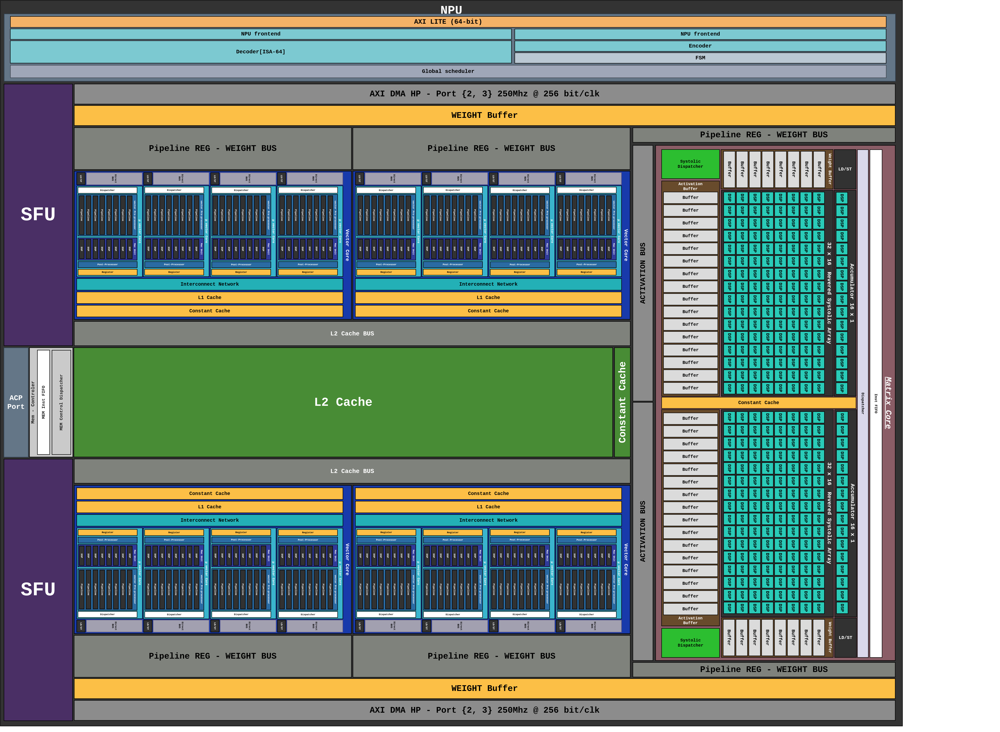

물리 플로어플랜#
{kind=link}

Figure 2. pccx v002 의 물리 플로어플랜. L2 Cache 가 중앙에 배치되어 상하 대칭으로 배치된 GEMV·SFU 뱅크와 양측에 위치한 시스톨릭 어레이에 액티베이션을 공급합니다.#
1. 대칭형 배치 전략#
pccx v002 의 핵심 물리적 특징은 중앙 공유 L2 캐시 + 대칭 컴퓨트 슬라이스 구조입니다.
중앙 L2 캐시: 플로어플랜의 기하학적 중심에 배치되어, 상하 슬라이스가 동일한 레이턴시로 액티베이션에 접근합니다.
상하 대칭 슬라이스: 각 슬라이스에는 GEMV 32×1 뱅크, SFU 뱅크, Constant Cache, L1 Cache 가 포함됩니다. 디코딩 단계에서 두 슬라이스가 병렬로 서로 다른 배치/헤드 또는 multi-query 를 처리할 수 있습니다.
우측 시스톨릭 어레이: 32×16 시스톨릭 어레이 2 개가 나란히 배치되어 프리필 단계의 대규모 GEMM 을 담당합니다.
2. 버스 구조#
버스 |
용도 |
|---|---|
WEIGHT BUS |
Weight Buffer → GEMM/GEMV 코어의 파이프라인 레지스터로 가중치 브로드캐스트. 파이프라인 레지스터(Pipeline REG - WEIGHT BUS) 가 각 뱅크 직전에 배치되어 타이밍을 완화. |
ACTIVATION BUS |
L2 Cache ↔ GEMV / SFU / Systolic Array. 수직 축으로 중앙 L2 에서 상하로 분배되며, 양방향 기록/판독이 가능. |
AXI DMA HP Port [2, 3] |
상단·하단 슬라이스 각각이 독립적인 HP 포트를 통해 호스트 DDR4 로부터 가중치를 스트리밍. 256 bit/clk @ 250 MHz 의 유효 대역폭. |
3. 캐시 뱅크 구성#
각 슬라이스 내부의 캐시는 기능별 분할 됩니다.
캐시 |
용도 |
설명 |
|---|---|---|
L1 Cache |
코어 로컬 |
GEMV 연산의 직접 액세스용. 코어당 private. |
Constant Cache |
상수 저장 |
ISA 의 shape/size 포인터, weight scale factor 등 저장. MEMSET 으로 프리셋. |
L2 Cache |
중앙 공유 |
액티베이션, KV 캐시, 중간 결과. 양측 슬라이스가 동시 접근. |
Weight Buffer |
가중치 스트림 |
순환 큐 형태로 HP 포트에서 스트리밍된 INT4 가중치 일시 저장. |
4. 물리 설계상의 고려사항#
4.1 라우팅 대칭성#
L2 Cache 와 상·하 슬라이스 간 배선 길이를 대칭화하여, 두 슬라이스의 액티베이션 접근 레이턴시를 동일하게 유지합니다. 이는 소프트웨어 측에서 양 슬라이스를 대칭적 작업 분할(symmetric work partitioning) 에 매핑하기 위한 전제입니다.
4.2 DSP 슬라이스 집중 배치#
KV260 의 1,248 개 DSP48E2 중 대부분이 우측 시스톨릭 어레이 영역에 배치되며, GEMV 및 SFU 뱅크는 LUT/BRAM 기반 연산으로 DSP 사용을 최소화합니다. 자세한 배치는 리소스 활용 섹션 (추후 합성 결과 반영) 에서 다룹니다.
4.3 BRAM/URAM 배분#
L2 Cache: URAM 기반 (~96 블록).
L1 / Constant Cache: BRAM 기반 (~140 블록).
Weight Buffer 는 BRAM 의 FIFO 모드 활용.
참고
리소스 사용량은 generate 파라미터에 따라 변동됩니다. KV260 기준 권장 구성은 pccx: 병렬 컴퓨트 코어 익스큐터 참조.